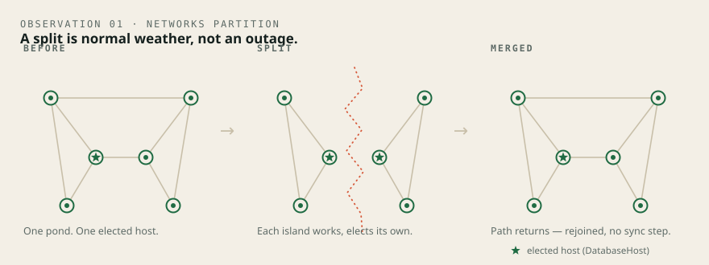

Validate the shape
Finish the install, and the simulator is right there, ready to run.
When the install finishes, the simulator is already there and ready. From that point you have two ways to go further: stand up more physical nodes across real sites, or use the simulator — run the same code against network shapes you could never unplug by hand. Same code, one machine, no waiting on hardware.
Finish the install and the simulator is in place and ready — nothing else to set up.
Stand up more physical machines across real sites and grow the network in metal.
Run the same code against topologies you could never build by hand — form, split, heal, on one machine.
Not a model of FrogNet. FrogNet, run somewhere you can't stand up by hand.
Most network simulators model a protocol — an approximation you have to trust separately from the thing that ships. This one runs the actual ported FrogNet code: the same discovery, routing, and host-election that runs on the node. The fabric between nodes is what's modelled — links, bearers, splits — so you can build a topology in software that would take a room full of radios to build in metal.
It's not a model of FrogNet. It's FrogNet, run against topologies you couldn't stand up in hardware — and the test gate proves it every run.

No hardware. No root. No network. One command.
The simulator is self-contained: it runs on the standalone machine in front of you — no node, no broker, no radios, no network at all. It needs Python 3 and nothing else. Run the whole gate, or point it at a single scenario and watch that one behave.
One command runs the full suite. Each oracle drives the actual function — not a copy, not a paraphrase — so it can't drift from the code it guards.
Watch a neighborhood form over mixed bearers and merge to one map — or watch a network split into two live halves and heal back into one.
What holds, stated exactly.
Specific behaviors, gated and reproduced every run — not a list of capabilities, a set of results the code has to produce or the gate goes red.
Two networks, then one — no special case.
A network tears into two independent networks; each elects its own host and carries its own complete picture. The path returns and they merge back to one — with no partition-specific code. The split is normal execution, not an error path.
Many islands become one map.
A multi-cell neighborhood — LAN cells plus internet tunnels — comes up independently and merges into one map: single component, full map, all-pairs reachable. The bearer discipline holds: one internet-bearing gateway per cell, local traffic stays local.
A handful of passes, whatever the shape.
For any connected topology, the network finds itself in a small, constant number of passes — routing settles, the host is elected, every node's picture agrees. Same result every run: it's deterministic.
0 regression
Every one of the gated oracles drives the real function and asserts an exact result — the precise route line a node must produce, the exact set of reachable pairs. A wrong answer is caught the instant it appears. The gate is the proof, and it runs green today.
On scaleThe gated proofs run at the scale of real neighborhoods — multi-cell, mixed bearers, dozens of nodes to full convergence, every run identical. Convergence takes a small constant number of passes whatever the shape, so the architecture scales to hundreds. But I don't call a number validated until it runs green, and the big runs are still compute-bound. The reach is real. The number I stand behind is the one the gate proves.
Put it through the worst day it will ever have.
The reason the simulator exists isn't to pass. It's to fail somewhere cheap. So the scenario I lean on hardest is the one I hope never happens for real: the grid is down, the towers are dark, and a whole neighborhood has to become its own network out of whatever radios and wires people have. Eight cells. Mixed bearers. Thirty-one segments. No operator.
Eight islands that can't see each other yet
Each block comes up alone — a LAN cell here, a WireGuard tunnel to the next street, a ham-radio hop to the far one. Every cell elects its own host and carries its own complete picture, because at that moment it is the whole network it can see.
One map, every node reaching every other
The cells find each other and merge — single component, full map, all-pairs reachable. One internet-bearing gateway per cell, local traffic stays local, cross-cell traffic takes the tunnel. No reconciliation pass. No operator ever typed a route.
Why it's a test and not a demoThe oracle pins the exact answer — the precise route line every node must produce, the exact set of reachable pairs, the cycle count it should take. When something breaks, one pair goes red and the diff shows you which hop the engine got wrong. That's the whole point of a worked investigation: not "it worked," but "here is exactly what it did, and here is how you'd catch the day it doesn't." The long-form walkthrough is in the book — §33, A Worked Investigation.
The standing offer
Don't take my word for it. Run the topology yourself.
The same code that runs on the node, pointed at a network you could never unplug by hand. It forms, it splits, it heals — and the gate proves it every run. Install, join, and then validate the shape before you trust it with anything that matters.